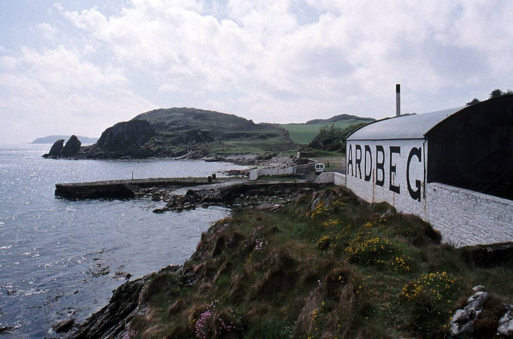

Ardbeg was licensed in 1815 by John MacDougall, though whisky had probably been made here illegally since the 1790s. By 1886 it was the biggest producer on Islay, making 250,000 gallons a year.
The 20th century was hard on it. The company went into liquidation in 1959, the distillery was mothballed in 1981 with every production job lost, restarted in a small way in 1989 and closed again in 1996.
In 1997 Glenmorangie bought it and brought it back to life. By 1998 the old kilns and malting floors had become the café and shop, and Ardbeg has since become one of the cult names in whisky.
Don't miss: the short path to the rocky outcrop by the shore, for the view back to the big ARDBEG letters on the warehouse wall.
An idea for an evening: Ardbeg opened its own boutique hotel, Ardbeg House, in Port Ellen in September 2025. Its restaurant and Islay Bar are open to visitors, with Islay seafood, whisky-smoked barbecue and a deep whisky list. It's in the village, about a 20-minute walk from our house. Book well ahead.
